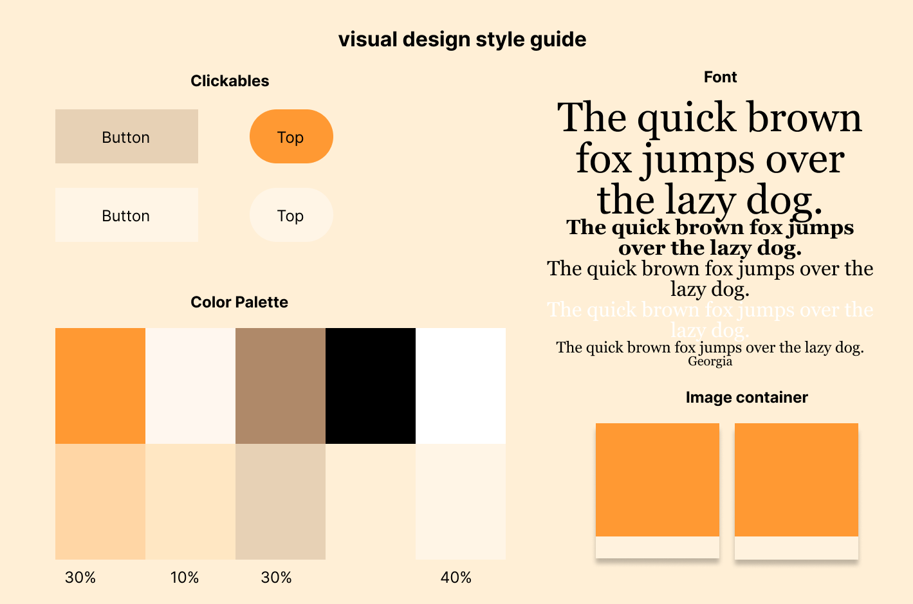

Context and Purpose
Looking back, as a Gen Z kid, I would use 🤙 this gesture for making a phone call,
while the Gen Alpha kids are more familiar with the way smartphones works.
The same goes for user design - times are changing and we as designers must change accordingly.
We also have to admit that sometimes the exsiting interface is not very user-friendly in either usability, responsiveness or aesthetics aspects.
From the user's perspective,
the designer needs to create a product that will display and function properly (at least) most of the time -
regardless of the size of the display and the type of device.
Therefore, this project aims to design and build a responsive website based on low-fidelity and high-fidelity prototypes of an existing interface.
Process
I picked Sakis Pizza because I think it is "simple yet poorly-designed": It is a simple website for a family-owned pizzeria, which basically shows its location, menu, introduction, and pictures.
Interface Analysis
- Menu- hard to spot on large devices.
- Hard to spot important information
- Low font color contrast
- Misaligned paragraph
- Gallery pictures do not have proper labels
- Empty white region
- Misplaced facebook link
Usability:
Accessibility:
- No headings.
- Text color contrast is too low.
- Text too small.
- "Menu" link to PDF might cause accessibility problems.
- Alternative text is not used properly.
✨Some Afterthoughts✨
Revisiting the analysis of the original site again, I felt that there were other things I could discuss - such as images, color scheme, overall structure and ease of use for the user.
Visual Redesign
Low-fidelity Wireframing - click for larger image
Thoughts and comments:
Since this is a pizzeria website, the biggest function is to quickly show their location, opening hours,
contact information and menu. In order to present it as simple as possible,
I created a one-page website and tried to put the important information in the most prominent position.
Visual design style guide
High-Fidelity Prototyping - click for larger image


Annotations:
-
Menu problem:
For the container of the "menu" background, I use position: relative; so that I can keep a relative position with the button.
-
Responsiveness:
I used display: block for each div because there are not many flex elements required (besides the gallery and the later info images, for which I use the row and column to adjust them better accordingly).
I'm using rem font size for h1, h2, and h3 so that they're relative to the root element and responsive on different device sizes while maintaining proper text hierarchy.
For side-by-side elements, such as the image and text in location & hours, I used the float:left and right. I also adjusted the margin for a better appearance. -
Gallery display:
I adjusted the image sizes so that they will align better in the gallery. For the gallery layout, I referred to w3schools for the alignment and display.
-
Other problems: Alt text; text font, contrast and size; paragraph alignment
I have adjusted them accordingly. See the redesigned website for more details.
-
There are interactive elements on the page, though not many.
-
Menu problem:
When hovering above the menu button, its color changes and implies that it is clickable; when clicked, it links to the menu pdf file.
-
Find improtant information:
When scrolling down, the “top” button appears on the right side. I used a little Javascript here (credit to w3schools.)
-
Misplaced Facebook link:
have also linked the Facebook like button at the bottom, which is clickable. The code is from Facebook.
-
I initially wanted to use a navigation bar at the top/side, but since the original website is relatively simple with only a few elements(menu, info, gallery and about us), I decided to discard the navigation bar.
Many thanks to w3schools! I would not have finished it without its amazing tutorials :')
-
Menu problem:
Final Responsive Redesign
Link:Sakis Pizza
Please note that the actual phone layout is different from the low-fi and hi-fi prototypes.
I originally wanted to have the gallery with one image each row,
but it seems that the gallery would be a little too long and the
user would have to scroll for quite a long time.And the display works well for two
images at the same time, so I decided to keep the layout design with
two images instead of one with different device sizes.
✨Some Afterthoughts✨
In hindsight, because of my unfamiliarity with html and css, this early work of mine still looks slightly immature. One of the biggest purposes of this page - to be responsive on all display devices - was not done well enough. For example, the font may be a bit too small on handheld devices. Now I may choose to use more external resources, such as bootstrap, to make the whole page more neatly displayed. Also I may use inline pdf to display the menu, rather than jumping to an external page to open the pdf file. I'll also be more careful with some of the color schemes and fonts - although my intention was to keep the color scheme of the original site (orange and black), it's still not quite as good as it could be.
The link to the orginal responsive redesign website